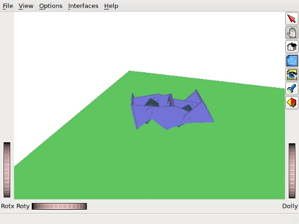

Currently I am working on the OpenMR: an OpenRave Modular Robots plug-in for simulating the locomotion of modular robots. It is in an early stage of development.
It consist of a hierarchy of controllers. At the lowest level is the servocontroller. This controller allows the users or higer levels to set the position of simulated servos. Above it is the sinoscontroller: sinusoidal oscillations controller. It in charge of generating sinusoidal oscillations on the servos from the parameters: amplitude, initial phase, period and offset. This controller is enough for making the snake or caterpillar robots to move with different gaits: sidewinding, rolling, rotating, etc.
At the top level is executed the user script or another high level controller.
The idea behind OpenMR is to dump all the knoledge generated in my PhD Dissertation into a software tool.